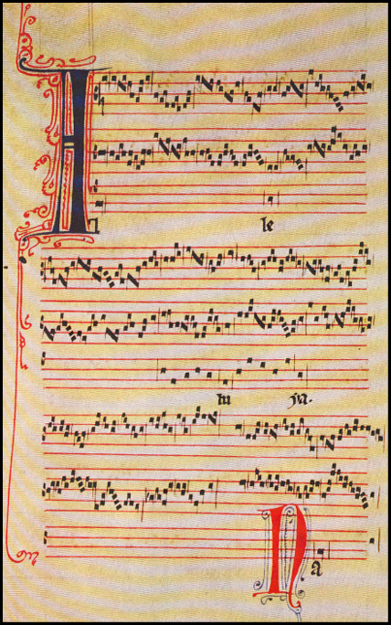

-

Chapter 2
Notation of Rhythm
If you were inventing your own system
of writing music, how would you indicate when each note should be played and
how long it should last?"Alleluia nativitas," a three-voice work by Pérotin (fl. c. 1300)
Early systems of music notation did not precisely describe rhythm. -
17
Section 1
The Beat and the Measure
Modern rhythm notation defines a rhythm by relating it to a steady pulse, real or imaginary, called the beat Beat The steady pulse that underlies measured music. . For example, some notes may last two or more beats, some one beat, some only one half beat or less. The beats themselves are counted evenly, like the ticking of a clock, at a given speed known as the tempo. Tempo Speed. A tempo marking is usually indicated at the beginning of a piece, generally with an Italian word such as allegro (fast), adagio (slow), etc. Many Italian words used to indicate tempo also convey information about the mood: for example, an adagio is slow but also sad. The tempo can be more precisely defined by a metronome marking, which shows the number of beats per minute. Beats are counted in groups called measures Measures A group of beats, commonly two, three or four beats, that fall into a pattern of strong and weak beats. The first beat of any measure, the downbeat, is the strongest. A measure line or bar line separates one measure (also called a bar) from the next. or bars. Measures of two, three, or four beats usually fall into a repeating pattern of strong and weak beats as shown below. The first beat of any measure will have the strongest accent.
The accented beats represent metric accents Metric Accents The strong beats that occur naturally in a repeated pattern of grouped beats. The first beat of each beat group is the strongest beat. The emphasis on beat 1 (the downbeat) in metered music, is known as a metric accent. There’s a secondary metric accent on beat 3 in a 4/4 meter. Metric accents are more subtle than dynamic accents. and they are generally more subtle than these audio examples. A note played on an accented beat may be slightly louder or longer – or it may be emphasized melodically or harmonically – or there may be no physical accent at all. The perceived metric accent on the first beat of each measure is largely mental. Metric accents occur naturally as a result of the grouping of beats into measures of equal duration.
Movie 2.1 Two-beat measures
The first beat of any measure will have the strongest accent.
Movie 2.2 Three-beat measures
The accented beats represent metric accents.
Movie 2.3 Four-beat measures
The downbeat signals the start of each measure and carries the primary accent.
-
18
Bar Lines
The ear can usually detect the beginning of each measure by hearing a regular pattern of metric accents. The first beat, called the downbeat Downbeat The first beat of a measure. At the beginning of a piece it may be preceded by an incomplete measure called the anacrusis, or the pickup beat(s). The anacrusis is an unaccented upbeat and the downbeat is the strongest beat of each measure. , carries the primary accent. (Later we’ll see that some meters also have a weaker secondary accent.)
On the staff, one measure is separated from another by vertical lines called bar lines. (Remember that a measure can also be called a bar.)
There are special forms of the bar line called double bar lines or double bars Double Bars Bar lines that mark the end of a section within a piece. A single bar next to a fatter bar is a final double bar line which marks the end of a piece. . Two single bar lines drawn very close together make a double bar that is used to separate two sections within a piece. A double bar whose second line is heavy marks the end of a composition. Later in the chapter we’ll discuss other types of double bars used to mark repeats.
Figure 2.1 Measures separated by bar lines
Figure 2.2 Double bar lines or double bars
Review 2.1
1. Rhythmic notation is based on the concept of
a steady underlying beat. Beats are grouped
into measures of two, three, four, or more beats, the first of which carries a metric accent.2. Measures are separated by bar lines, vertical
lines through the staff. Double bars mark section divisions within the music; a heavy double bar marks the end of a piece. -
19
Section 2
The Symbols of Rhythm Notation
All the symbols for musical notes are derived from the basic one we have already been using, which is called the whole note Whole Note The basic unit of rhythm in notation.
A whole note is equal to 2 half notes,
4 quarter notes, 8 eighth notes,
16 sixteenth notes and so on. *. A note half as long as a whole note is called, of course, a half note, and it’s made by adding a stem to the whole note:Then we fill in the half note to make a quarter note,
equal in time to one-fourth of a whole note, add a flag Flag A symbol added to create note values smaller than a quarter note. Flags are always drawn on the right side of the note stem whether the stem is facing upward or downward. An eighth note has a single flag, a sixteenth has two flags and so on. Beams join flagged notes together in beat groups and are a substitute for flags. The number of beams equals the number of flags. to make an eighth note, and then add more and more flags
as needed; two flags for a sixteenth note, for example
(see Figure 2.4). In theory we could keep adding flags forever and make shorter and shorter notes, but you will rarely see a note shorter than a sixty-fourth, which has
four flags.Figure 2.3
A whole note is worth
two half notes.* In the United Kingdom the equivalent terms beginning with the whole note are semibreve, minim, crotchet, quaver, semiquaver, demisemiquaver, and hemidemisemiquaver.
Movie 2.4 Tree of note values
Stems and flags are added to make different note values.
-
20
Beams
Beams Beams A slanted or horizontal bar that connects two or more note stems as a replacement for the flag. Beamed notes are grouped in beats and correct beaming makes the beat groups easier to see. are a substitute for flags. You can beam together two
or more notes that would otherwise have flags as long as there aren’t any unbeamed notes separating them. The number of beams equals the number of flags for each note value.As we’ll see later in this chapter, beamed notes are grouped
in beats. The movie below shows the same passage with and without beams.Dotted Notes
A dot Dotted Note An augmented note value created by adding a small dot next to a note head. A dot following a note increases the note’s value by half its original value. Dotted notes divide into three parts rather than two. For example, a dotted quarter equals three eighth notes.
A double dotted note is equal to one and three quarters the note’s original value. The first dot adds half its original value and the second dot adds half of the first dots value.
For example, a double dotted whole note equals a whole note + a half note + a quarter note. lengthens a note by half its value. For example, since
a quarter note is equal to two eighth notes, a dotted quarter note will be equal to three eighth notes. An additional dot adds half the value of the previous one, making the more unusual double dot.
Suggested Practica Musica Activities 2.1
• Long and Short: Identify which pattern of
long and short notes was played.• One Bar Rhythms: Notate the rhythm you hear by
placing eighth and quarter notes in the staff.
Figure 2.4 Flags and beams
Gallery 2.1 Dots and double-dots
Movie 2.5 Beamed notes
-
21
The dotted note often appears as part of a dotted pair, in which it’s combined with a short note equal to one-third of its value. Usually the dotted note comes first, as in the two examples below.

Suggested Practica Musica Activities 2.2
• Dotted Rhythm Patterns: Identify which pattern of
dotted rhythms was played.Figure 2.5 Every note value has an equivalent rest.
Movie 2.6 Dotted pairs and double dotted pairs
Dotted pairs characterize the rhythm in the song "I’ve been working on the railroad." Double dotted pairs might be heard in a slow majestic overture such as the one above.
Rests
A rest Rest A staff symbol indicating a length of silence. For every note value, there’s an equivalent rest symbol. indicates a length of silence. For every note value there is a corresponding rest, as shown in Figure 2.5. The difference in appearance between the whole rest and the half rest is hard to remember at first. Perhaps it will help if we say that the whole rest symbol fills the top half of a space to show that it has greater value than the half rest, which fills the lower half of a space.
Some people remember by saying that the half rest looks like a hat:
-
22
Though rests are silent you don’t just skip over them! The beat continues at a steady pace through a measure of rests just as it would with notes.
Review 2.2
1. The basic note value is the whole note, which can be divided into two half notes or four quarter notes or eighth notes, etc. Note symbols are distinguished by being filled-in or hollow, by the presence or absence
of a stem and the presence or absence of one or
more flags.2. Flags on note stems can be replaced by beams.
The number of beams is equal to the number of flags. Beams are often used to group notes visually to show the beat divisions.3. A dot after a note increases its value by one half. Dotted notes can be divided into three equal parts.
For example, a quarter note is worth two eighths
but a dotted quarter is worth three eighths.4. In the case of a double-dotted note, the second dot lengthens the note by one quarter the original value
of the note (or one half the value of the first dot).5. For every note value there is a corresponding rest, which indicates a length of silence.
Suggested Practica Musica Activities 2.3
• Identifying Rhythms with Rests: Listen to the example
and identify which rhythm with rests was played.• Identifying Simple Rhythms: Listen to an example and choose which of four choices was played.

Movie 2.7 Counting rests
Watch the beat marker as this plays.
-
23
Section 3
Meter
So far we have discussed only relative note values: we know that a half note is half as long as a whole note, for example,
but we don’t know how many beats to count for either of them. That information is provided by the meter signature Meter Signature A representation of meter found at the beginning of a piece or at changes of meter within the piece. The meter signature, also called a time signature, usually consists of two numbers. The lower number represents a note value, such as “4” for a quarter note or “8” for an eighth note, and the upper number tells how many notes of that value make up a measure.
For simple meters, in which the beat has the value of an undotted note, the upper number also tells the number of beats in a measure. For example, 4/4 has 4 beats in a measure, each with the value of a quarter note. 3/4 has three beats and 2/2 has two beats.
In compound meter the beat is divisible by three – it has the value of a dotted note. For compound meter the number of beats per measure is actually the upper number divided by three. 6/8 meter is an example: it has two beats per measure, with each beat having the value of a dotted quarter note. The total time of the measure equals that of 6 eighth notes. , also called the time signature, which appears at the beginning of
the piece right after the clef and the key signature, which we’ll discuss in Chapter 6. Unlike the clef and key, which repeat on every line of music, a meter signature appears only once at the beginning of a piece and at any change of meter.There are two basic types of meter: simple and compound,
and their signatures are interpreted differently.
Simple Meter
In the case of simple meter Simple Meter Meters in which the beat is represented by an undotted note, e.g. 4/4, 3/4, 2/2, 3/2, 4/8 etc. The upper number of the meter signature tells us how many beats per measure, and the lower number, which note value equals one beat. Simple meters can be duple (the number of beats per measure is divisible by 2) or triple (the number of beats is divisible by 3). , the upper number specifies the beats per measure while the lower number tells which note value gets one beat. The upper number can be anything, but
the lower number is limited to those that represent note values and usually is 2 (half note), 4 (quarter note), or 8 (eighth note). A "4/4" signature tells the reader that each measure of the following music will have four beats and that the quarter note will count as one beat. It doesn’t mean that every measure will necessarily have four actual quarter notes in it – only that thevalue of the notes in the measure will add up to equal four quarters. For instance, a measure of 4/4 might contain two half notes, or three quarters and two eighths, or a single whole note. And if one quarter note equals one beat in 4/4 time then an eighth note will last half a beat, a half note will last two beats,
a whole note four beats, and so on.4/4 is probably the most frequent meter in classical and popular music; it’s sometimes called common time. Another you will often see is 2/2, or cut time, which allows the same number of quarter notes in each measure as 4/4 but counts only two beats per bar, so that the half notes each get one beat. For this reason cut time (or alla breve) is often used for fast pieces. In cut time an eighth note lasts only a quarter of a beat, a quarter note is half a beat, and a whole note is worth
two beats.Often the meter signature for 4/4 is written not with numbers but with the sign,
 , which means the same thing. The common time symbol with a line through it, is used to represent the meter 2/2 (4/4 “cut in half”).
, which means the same thing. The common time symbol with a line through it, is used to represent the meter 2/2 (4/4 “cut in half”).
Figure 2.6 Common time and cut time
-
24
Watch the beat marker as you listen to the examples below. The tempo is the same, but the half note is worth 2 pulses in common time, and one pulse in cut time.
Duple And Triple Meter
That “
 ” meter signature in Movie 2.8 does not stand for “common” – it’s a remnant of the earliest rhythmic notation. Though
” meter signature in Movie 2.8 does not stand for “common” – it’s a remnant of the earliest rhythmic notation. Though
it looks like a letter C, originally it was a half circle. The half circle signified a meter that in modern terms would have a measure divisible by two, which we now call duple meter Duple Meter Any meter in which the number of beats per measure is divisible by two. A duple meter can be either simple (4/4) or compound (6/8). . A full circle referred to a meter equivalent to what we now call triple meter Triple Meter Any meter in which the number of beats per measure is divisible by three. A triple meter can be either simple (3/4) or compound (9/8). : divisible by three. 3/4 is a popular simple triple meter: each measure has three beats, and the beat is counted in quarter notes with the accent falling on the first beat of each measure. You can easily recognize the 3/4 meter of waltz music.Movie 2.8 Common and cut time (4/4 and 2/2)
The tempo is the same but the half note is worth 2 pulses in common time and 1 pulse in cut time.
Movie 2.9 A waltz melody in 3/4 meter
-
25
Compound Meter
Simple meters are those in which the beat is counted by an undotted note. Undotted notes divide in halves: for example, a quarter note divides into two eighths. In compound meter Compound Meter Any meter in which the beat is represented by a dotted note, 6/8, 12/8, 6/4. The beat in a compound meter is divisible by three (dotted notes divide into three parts), so the number of beats per measure is equal to the top number of the meter signature divided by 3. For example, 6/8 meter has 2 dotted quarter beats per measure, 2 groups of 3 eighth notes. (3/4 meter has the same number of eighth notes but divides metrically into 3 groups of 2 eighth notes.) Compound meters can be duple (6/8) or triple (9/8). the beat is represented by a dotted note, which divides in three: a dotted quarter note is worth three eighths. Let’s look at two examples of music in 6/8 meter. The first has a slow tempo and the second
is faster.Figure 2.7 Ending of "Home on the Range"
The last measure is complete when you add the value of the pickup.
The Anacrusis
Melodies don’t always begin on the first beat of a measure. Often a tune begins with an anacrusis Anacrusis An unaccented pickup note or notes preceding the first downbeat of a piece. The pickup measure has an incomplete number of beats that is made complete at the end of the piece. If the pickup bar has only 1 beat, the final measure will have only 3 in a 4/4 meter. , an unaccented “pickup” note
or notes preceding the first downbeat. The word “Oh” at the beginning of “Home on the Range” is a one-beat anacrusis.
The incomplete measure that precedes the first full measure is called a “pickup” measure.If a piece begins with an incomplete number of beats, the last measure is normally written incomplete as well, so that the beginning and the end add up to one complete measure. The last measure of our “Home on the Range” example ends with two beats instead of three.
Movie 2.10 A melody beginning with a “pickup” beat
The pickup note precedes the first downbeat.
-
26
In this Siciliano by Bach, the tempo is slow enough to count six eighth note beats to every measure. Notice, though, that each measure consistently divides into 2 groups of 3 eighth notes, or two dotted quarters. The bass accompaniment sounds on the first and fourth eighth beats throughout.
Music in 6/8 often has a quick tempo, in which case musicians count only two beats to the measure, each the value of a dotted quarter. It’s easy to hear the dotted quarter note beat in this familiar melody.
Movie 2.11 6/8 meter (J.S. Bach, Siciliano, Flute Sonata E Flat Major)
Movie 2.12 Counting the dotted quarter beats in compound meter
-
27
The meter signature for a compound meter would be more logical if it had a dot beside the lower number and listed the actual performed beats per measure above it (e.g. 2/4. instead of 6/8), but traditional practices are not always logical. Other meters
usually performed as compound are 3/8, 9/8 and 12/8, with one, three, and four beats to the bar, respectively.How can you tell if a meter is compound? A rule of thumb is that if the meter’s numerator is not three but is divisible by three then the meter is compound. But that rule isn’t perfect: 3/8 is usually fast and performed compound (one beat per measure, with the beat worth a dotted quarter). Perhaps it’s better to ask: why does it matter? Knowing whether the beat is simple or compound tells you a lot about how the piece should
be played. A 6/8 measure and a 3/4 measure can both be subdivided into 6 eighth notes. The difference is that 3/4 is a triple meter, with three beats per measure and 6/8 is a duple meter with two beats per measure. As we saw earlier in this chapter, duple meter and triple meter have different metric accents. Notice the placement of the beat markers in Movie 2.13.When you are writing music you also need to know whether the beat divides in 2 or 3. If you have placed a meter signature of 3/4 and find that you are often dividing a measure into two equal parts then you are really using a compound beat; your beat has the value of a dotted quarter, so you need to change that meter signature to avoid confusion.
Suggested Practica Musica Activities 2.4
• Placing Bar Lines: Add missing bar lines for each music example in simple meter.
• Bar Lines in Compound Meter: Add missing bar lines to compound meter examples.

Movie 2.13 Comparing 3/4 and 6/8 meters
-
28
Asymmetrical Meter
All of the meters discussed so far are symmetrical in that their beats per measure can be evenly divided either by two
(4/4, compound 6/8) or three (3/4, compound 9/8). That is, they are either duple or triple meters.On occasion you’ll encounter music written in an asymmetrical meter Asymmetrical Meter A meter that is divisible by neither three nor two: e.g. 5/4, 5/8, 7/4. whose beats per measure do not divide evenly by either three or two, such as 5/4 or 7/4 or 7/8. Such meters have often been used in our own century by both “serious” and pop musicians. Familiar examples are Dave Brubeck’s "Take Five," in 5/4 time, and the Beatles’ "All You Need is Love," much of which is in 7/4. These asymmetrical meters are not as hard to perform as they might seem at first glance. The trick is to consider each measure as a combination of smaller regular beat groups. 5/4, for example, can be regarded as 2/4 + 3/4 or 3/4 + 2/4 (depending on the music – this is a matter of interpretation). 7/4 has more possibilities – it might seem to be written as 4/4 + 3/4, or 3/4 + 2/4 + 2/4, etc. Musicians often work out their interpretation of such meters bar by bar. The second movement of Tchaikovsky’s Sixth Symphony is written in 5/4 throughout. The movement begins with a graceful melody that clearly divides into groups of 2/4 + 3/4.
Suggested Practica Musica Activities 2.5
• Identifying Meter: Choose the correct meter for each example.
• Meter Types: Identify the meter as simple or compound, duple or triple.

Movie 2.14 Asymmetrical meter in Tchaikovsky’s Allegro con grazia from Symphony No. 6
-
29
Review 2.3
1. A duple meter is one whose counted beats per measure can be divided by two. A triple meter divides by three. Examples of duple meter are
2/2, 2/4, 4/4, compound 6/8. Examples of triple meter are 3/4 and compound 9/8.2. A piece of music can begin with an incomplete measure called a “pickup” measure. When the first measure has an incomplete number of beats, the final measure is also incomplete so that together
they make one complete measure. Anacrusis, refers to the unaccented note or notes that precede the
first complete measure.3. Asymmetrical meters are those that divide by neither two nor three, such as 5/4 and 7/8. It’s best to think of these as a combination of duple and triple meters – for instance, 5/4 can be read as 2/4 + 3/4 or 3/4 + 2/4, depending on the rhythmic groups within each measure.
4. A meter signature at the beginning of a score describes the metric organization of the music. Meters are either simple, in which the beat is
counted with undotted notes or compound, in
which the beat is counted with dotted notes.5. In simple meter the upper number of the meter signature tells the number of beats counted per measure, while the lower number tells which note value corresponds to the beat.
Examples: 2/2, 2/4, 4/8, 4/4, 3/4.6. In a compound meter the upper number of the signature equals three times the number of beats actually counted in each bar. A fast 6/8 is generally performed compound, with 2 beats to the measure and each beat the value of a dotted quarter.
Other examples of meter, usually performed compound, are 3/8, 9/8, and 12/8 (one, three,
and four beats per bar). -
30
Section 4
Making Notation Count
Beaming with a purpose
Now that you know the importance of the beat in rhythm notation you can appreciate that beams in instrumental music are best
used to group notes together in a way that will make the beat and meter clear to the eye of the reader.Music in 6/8, if beamed incorrectly, may look like it’s really in 3/4. In a 6/8 performed with two beats to the bar you must be
careful to beam your eighth notes in threes instead of twos, unless you are deliberately making a special effect. Otherwise you could accidentally give the impression of three beats to the bar. Incorrect beaming could cause a musician to confuse the performance by putting the accents in the wrong places. Compare these two versions of Schumann’s "Wilder Reiter." In the first example, the beaming confuses both the meter and the melodic pattern of eighth notes. The second version is beamed correctly – as Schumann wrote it.Movie 2.15 Correct beaming of 6/8 meter in Schumann’s "Wilder Reiter"
(from the Album for the Young)Incorrect beaming confuses both the meter and the melodic pattern of eighths.
-
31
Beam groups can include notes of different value, so long as they are all beamable (that is, they are eighth notes or less and would have flags otherwise):
Stem And Flag Direction
Stems can go either up or down. Either way the note will sound the same, but the choice of stem direction may be important for visual clarity. If you have only one line of music on a staff then the stem direction depends on position; notes above the middle of
the staff have their stems down and those on the middle line or below have their stems up.Remember that descending stems are always on the left side of the note head and ascending ones are always on the right.
Flags, however, always wave to the right (the wind blows from the start of the music!).Figure 2.8 Correct and incorrect stem and flag direction


Suggested Practica Musica Activities 2.6
• Beaming to Show the Beat: Add beams to any
beamable notes according to the meter.Movie 2.16 Beaming to show beat groups
-
32
Sometimes composers writing music with several parts on one staff, use stem direction to show that certain notes follow each other or are performed by the same voice or other instrument. In that case, they will ignore the rule about staff position and just make
one part’s notes all with upward stems, and another all with downward stems. In this music for soprano, alto, tenor, and bass, the soprano’s notes have upward stems, the alto’s downward, the tenor upward again, and the bass downward.Movie 2.18 Using stem direction to separate voices. J.S. Bach, Ein’ feste Burg
Movie 2.17 Stem direction has no effect on the sound.
(Petzold, Menuet in G, from the Notebook for Anna Magdalena Bach) -
33
Repeat Signs
Most music contains repeated passages, and repeat signs Repeat Signs A double bar line with two dots, one on either side of the middle staff line. Repeat signs can be right facing (dots to the right of double bar lines) or left facing and can occur anywhere in the music. They usually substitute for a bar line but can occur in the middle of a measure. Used by itself, a left facing repeat sign tells the performer to repeat from the beginning of the piece. Otherwise, a right facing repeat sign is used to mark the beginning of a repeated section.
Repeat signs can be used with first and second endings. The first ending is played before repeating, but the second time through, the second ending is played instead of the first ending. provide a way to avoid writing out the same music twice. These signs look like double bar lines with dots before or after and can take the place of normal bar lines – but they can also be placed in the middle of a measure if needed.The dots tell you which way the repeat faces: dots to the left of the sign mean to go back; dots at the right indicate the start of
a repeated section. If you encounter a repeat with the dots at its left, go back to the previous start-repeat sign, or to the beginning of the piece if there is no start-repeat indicated.If two passages are identical except at their endings, you’ll often see a “first ending” and “second ending” marked at the repeat sign: the first time through you take the first ending; the second time through you skip over the first ending and do the second one instead.
There are other ways to indicate a repeated passage. Da capo Da Capo An Italian term, abbreviated D.C., meaning “from the beginning.”
Da capo al fine, abbreviated
D.C. al fine, tells the performer to repeat from the beginning to the
place marked fine (end). (literally, from the head), abbreviated D.C., indicates a repeat from the beginning. Dal segno Dal Segno An Italian performance direction meaning “from the sign.” Dal segno, or D.S., instructs the performer to repeat from the segno. , or D.S., tells the performer to repeat “from the sign,” which normally means from the symbol pictured below. Da capo or dal segno can be combined with
al fine meaning repeat and continue to the place marked “fine” (end.) D.C. or D.S. al coda adds one further complication: repeat and continue to the instruction “al coda” (to the coda) and then jump to the coda Coda A concluding passage of music that extends the end of a work. (The literal translation of coda is “tail.”) Sometimes the instruction al coda (to the coda) is used to tell the performer to jump to the coda section marked by the coda sign shown here. , which is marked by the coda sign.
A coda (literally, “tail”) is a concluding passage of music that extends the end of a work.D.S. stands for
dal segno which means “from
the sign.”Movie 2.19 Repeats with first and second endings
-
Keeping Notation Simple
If you are writing a rhythm to be played on an instrument whose sound stops quickly, such as a xylophone or a wood block, the use of rests is uncertain. For example, the four patterns shown below will all sound the same when played by an instrument whose tone does not sustain.
Musicians generally prefer to keep notation as simple as possible, and so a composer wanting short notes on a xylophone would probably choose (2) or even (1) as the way to notate this pattern. Both performances would sound the same, and either one would be easier to write and read than (3) or (4). On the other hand, if the instrument were a violin or a clarinet each of these patterns would sound different, with long notes in (1) and very short notes in (4).
Notation does not tell you everything about how a passage will sound; you need to consider also what instrument is being used — as well as the tempo, the style of the piece, and other subtle factors.
Movie 2.20 Longer notes will sound the same as short notes when played by an instrument
whose tone does not sustain.34
-
35
Review 2.4
1. Using beams in the place of flags helps in visually grouping notes. Rhythms are easier to read if the beams follow the meter’s beat structure.
2. Stems may go either up or down without affecting the rhythm. Usually notes above the middle line of a staff have their stems downward; notes on or below the middle line have their stems upward.
3. Repeat signs indicate sections of music that are to be repeated, either from the most recent starting repeat or from the beginning of the piece. First and second endings are used for a repeat that calls for
a different ending. Other types of repeat signs include da capo, a return to the beginning, and
dal segno, a return to the segno (sign). These can be combined with al fine, continue to the place where fine is marked, or al coda, continue to the words “al coda” and then jump to the coda which is marked by the coda sign. A coda (tail) is an extended conclusion.